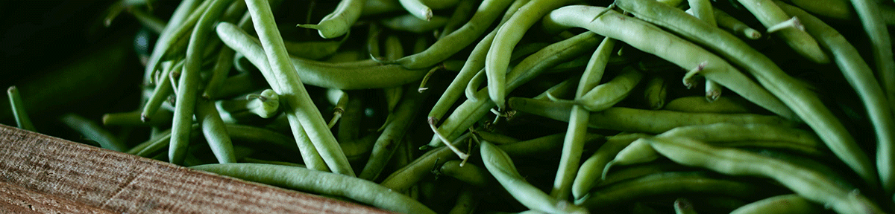

Welcome to our little corner of the internet!
Welcome to Rogue Pickings, the roaming truck bringing you the freshest ingredients and ideas in food. Our team works hard so you can be sure our ingredients are always fresh and picked carefully. Our menu changes every day and is made with you in mind. We can't wait to come to you! Check out our locations to see where you can find us.